TraeWork 绿皮书
一本覆盖新手入门到进阶实战的 TraeWork 完全指南。
内容整理自 TraeWork 官方知识库（飞书 Wiki）与 TRAE 微信公众号推文，包含产品定位、界面入门、三种模式、20 个核心理由、8 个入门技巧、核心能力（Skill/MCP/自动化/规则记忆/多模态/浏览器控制）、100+ 真实用法分类与最新「我的文件」功能解读。
无论你是开发者、职场人还是学生，都能在这里找到把 AI 真正用进工作的方法。
TraeWork 绿皮书
AI 原生工作台 · 从入门到精通完全指南
整理 GoodTime（公众号「宁的 AI 小站」）· 绿皮书编写组（基于 TraeWork 官方知识库与 TRAE 公众号公开资料整理）
版本 v1.0 · 2026 年 8 月
篇幅 7 大部分 · 30 章 · 3 附录
版权与免责声明
本书为面向 TraeWork 用户的学习型手册，内容综合自 TraeWork 官方知识库（bytedance.larkoffice.com/wiki/RxVXweukSi7JtIkhOKBcuSlbnfC）、TRAE 微信公众号推文及 TraeWork 社区公开资料。
TraeWork、TRAE、TRAE IDE 及其相关名称、标识、界面与功能描述归字节跳动所有。本书与字节跳动无官方隶属关系，书中观点仅代表整理者，不构成任何承诺。
AI 产品迭代迅速，功能、定价、权益以 TraeWork 官网（trae.cn）实时信息为准。本书内容由 AI 辅助整理，关键操作请自行核对。
未经书面许可，不得以任何形式复制、摘编本书主体内容用于商业用途；个人学习、内部传阅不受限。
致谢
感谢字节跳动 TraeWork 团队持续打磨这款"能真正把任务完成"的 AI 原生工作台；感谢在官方社区、知识库和公众号分享实战经验的每一位用户与创作者。
—— GoodTime · 公众号「宁的 AI 小站」 · TraeWork 绿皮书编写组
关于本书与使用说明
TraeWork 是字节跳动面向开发者、职场人与学生推出的专业 AI 办公平台，侧重学习、办公与工程执行场景——无论你是开发者、职场人还是学生，都可以用它写方案、做分析、处理文件、推进协作，并完成需要持续执行、检查和产出结果的自动化任务。
这本绿皮书的内容全部来自 TraeWork 官方知识库与 TRAE 公众号，按照"认识 → 入门 → 核心理由 → 核心能力 → 真实用法 → 生态 → 最新动态"的顺序组织，既是新用户的上手指南，也是老用户查阅能力的速查手册。
新手友好
从三栏界面到第一个任务，跟着做五分钟跑通，不预设任何技术背景
官方权威
内容全部取自 TraeWork 官方知识库与公众号，产品定义、能力描述均为官方口径
场景导向
100+ 真实用法按 12 大场景分类，按人群给出阅读路径，直接对标你的工作
持续更新
TraeWork 迭代很快，本书随官方知识库持续跟进最新功能
本书结构
| 部分 | 内容 | 适合谁 |
|---|---|---|
| 第一部分 认识 TraeWork | 产品定位、vs Chatbot、三种模式 | 所有人，尤其新用户 |
| 第二部分 界面与入门 | 三栏布局、云端/本地、第一个任务、8 个入门技巧 | 刚注册的新用户 |
| 第三部分 20 个理由 | 门槛、体验、能力、本土生态、复用自动化、安全六大维度 | 想了解产品差异化的人 |
| 第四部分 核心能力 | Skill、Rules/Memory、MCP、自动化、多模态、浏览器控制、模板库、三端协同 | 想深入使用的用户 |
| 第五部分 100+ 用法 | 12 大场景分类、按人群推荐路径 | 找对标场景的人 |
| 第六部分 社区生态 | 社区、交流群、直播、Specialist 招募、官方账号矩阵 | 想融入社区的人 |
| 第七部分 最新动态 | 「我的文件」功能上线解读（来自公众号推文） | 想追新的人 |
新用户：从第一部分顺序阅读，跟着第二部分完成第一个任务。
职场人：重点看第三部分（20 个理由）和第五部分（100+ 用法）。
开发者/设计师：重点看第一种模式（Work/Code/Design）和第四部分核心能力。
老用户：直接翻第七部分看最新动态，或查附录 A1 的资源链接。
什么是 TraeWork
TraeWork 是一款 AI 原生工作台。它提供网页端、桌面端和移动端三种形态，并围绕不同用户和任务场景提供 Work、Code、Design 三个模式。
一句话理解：TraeWork 可以把你的工作目标交给 AI 来推进。你只需要说明想完成什么，AI 会帮你拆解步骤、执行任务、生成结果，并根据你的反馈继续修改。
1.1 三端形态
| 形态 | 适合场景 | 你可以怎么用 |
|---|---|---|
| 桌面端 | 长期任务、复杂项目、本地文件或代码任务 | 支持文字、语音、附件、技能等输入，可在对话中查看进度、预览产物和验收结果 |
| 移动端 | 碎片化场景下发任务、查看进度、补充要求 | 在手机上发起任务、管理云端和已连接电脑中的任务，并与其他端同步 |
| 网页端 | 临时需求、快速验证、外出办公 | 打开网页即可使用云端环境，无需下载安装（中国版 work.trae.cn / 国际版 work.trae.ai） |
1.2 它能帮你做什么
把目标变成产物
从"我想做什么"出发，推进到文档、代码、报告、原型、网页等可交付结果
把复杂步骤交给 AI
AI 负责拆解步骤、读取上下文、调用工具、执行任务，你负责确认方向和验收
把经验沉淀下来
通过 Skill、规则、记忆、MCP 等能力，把一次性经验变成持续复用的资产
让任务跨端接续
同一个任务可在网页、桌面、移动端之间同步查看和继续推进
1.3 常见任务类型
| 任务类型 | 可以交给 TraeWork 做什么 | 适合模式 |
|---|---|---|
| 文档与内容 | 整理资料、生成报告/PPT、改写文案、输出方案、制作结构化文档 | Work |
| 数据与分析 | 分析表格、提炼结论、生成日报/周报、整理指标变化和行动建议 | Work |
| 应用生成 | 生成 Web/App/小程序等应用，搭建运营工具、管理后台、平台系统 | Work / Code |
| 代码与工程 | 理解代码库、修复 Bug、补充测试、运行命令、处理 Git 工作流 | Code |
| 设计与原型 | 生成设计稿、导入设计资产、调整样式、预览设计、衔接到 Code 模式 | Design |
| 重复性工作 | 沉淀 Skill、连接 MCP、设置自动化任务，让重复流程稳定复用 | 按任务选择 |
TraeWork vs 普通 Chatbot
很多人第一次接触 TraeWork，会以为它只是一个"更强的 AI 聊天框"。但它的价值远不止于此——和普通 Chatbot 不同，TraeWork 能接住任务、理解上下文、调用工具、产出文件，并在本地、云端和移动端之间持续推进工作。
| 对比维度 | 普通 Chatbot | TraeWork |
|---|---|---|
| 核心交互 | 以问答为主，回答建议或生成文本 | 以任务为中心，目标是把任务执行到可验收产物 |
| 任务推进 | 需要用户手动拆解和复制粘贴上下文 | Agent 理解目标、拆解步骤、读写文件、调用工具并持续推进 |
| 上下文能力 | 更多依赖当次对话输入 | 支持项目上下文、全局记忆、文件、技能、MCP 等多种来源 |
| 过程控制 | 过程不可见，主要看到最终回复 | 执行过程透明，可查看进度、补充要求、纠偏和验收 |
| 交付形式 | 常见输出是文本答案 | 输出文档、PPT、图表、网页、代码变更、设计稿等多种产物 |
| 能力扩展 | 主要依赖模型本身 | 通过 Skill、MCP、记忆、规则等扩展能力边界 |
Chatbot 更擅长"回答你"；TraeWork 更强调"和你一起把任务完成"。
Work / Code / Design
TraeWork 顶部提供三种模式，分别对应办公协作、开发执行和设计创作场景，覆盖不同人群。狭义上一句话理解：Work 负责把事情想清楚，Design 负责把产品画出来，Code 负责把它真正做出来。
| 模式 | 适合人群 | 典型任务 |
|---|---|---|
| Work | 产品经理、运营、数据分析师、市场、学生、职能等多角色人群 | 处理文档、数据、PPT、研究分析、内容生成、工作总结、生成并分享 HTML 页面 |
| Code | 习惯让 AI 主导开发的工程师和技术用户 | 编码、调试、理解代码库、处理 Git 工作流、修复 Bug、测试 |
| Design | 设计师、产品、前端、需要快速做视觉方案或原型的用户 | 生成设计稿、导入 Design Library、风格探索、预览编辑设计、导出到 Code 模式 |
4.1 Work 模式场景举例
我上传了一批用户反馈，请帮我按功能问题、体验问题、内容建议、付费相关等类别整理，并提炼出一份需求清单。每条需求请包含：用户原话摘要、核心问题、影响范围、优先级建议。
请根据我上传的表格数据，生成一份运营日报。重点分析今日核心数据表现、环比变化、异常波动原因，并给出 3 条可执行的运营建议。语言简洁，适合发给团队同步。
4.2 Code 模式场景举例
登录时出现【具体问题/报错信息】，请帮我定位原因并修复。你可以先阅读相关代码，找到可能出问题的文件和逻辑，再给出修改方案并完成代码改动。修复后请说明问题原因、改了哪里，以及建议我如何验证。
请帮我阅读这个项目的代码结构，梳理主要目录和关键模块的作用。重点说明项目入口、核心业务逻辑、数据流转方式、配置文件和测试位置。请用新同学也能看懂的方式解释。
4.3 Design 模式场景举例
我想从 0 设计一个【产品/页面类型】。目标用户是【用户群体】，核心场景是【使用场景】。请先帮我探索 3 个不同的视觉方向，包括整体气质、配色、字体、布局风格和适合的组件形式。每个方向请说明适合什么场景，并给出可视化初稿。
写材料、做分析，用 Work；看代码、改项目，用 Code；做界面、出设计，用 Design。三个模式也可以灵活搭配——例如把 Design 模式生成的设计图直接导入 Code 模式，无缝衔接开发。
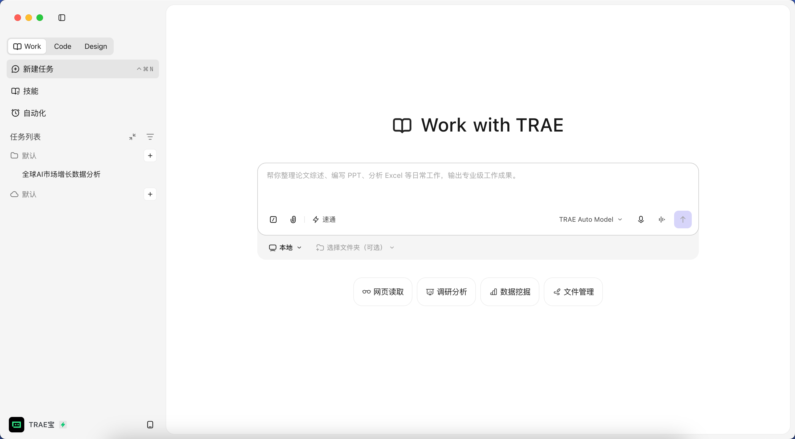
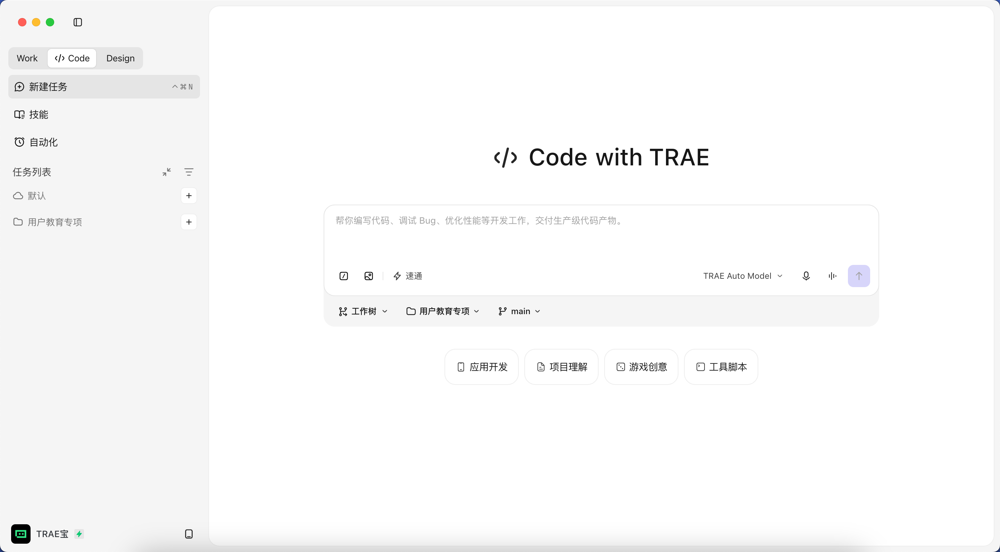
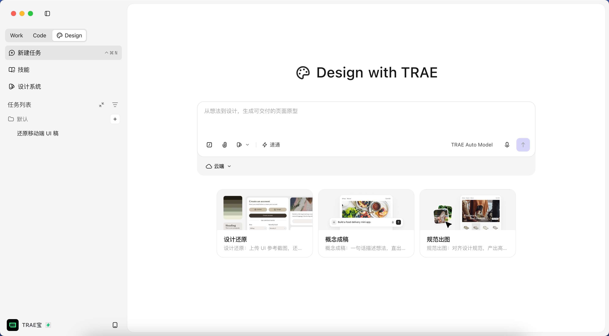
TraeWork 官方知识库
三栏界面：左任务、中对话、右结果
TraeWork 桌面端采用"左中右"三栏式布局：
- 左侧栏：新建、切换和管理任务，进入技能、自动化和账号设置
- 中间区：输入需求、和 AI 对话，查看 AI 的计划与执行过程
- 右侧栏：查看待办、任务产物和参考信息
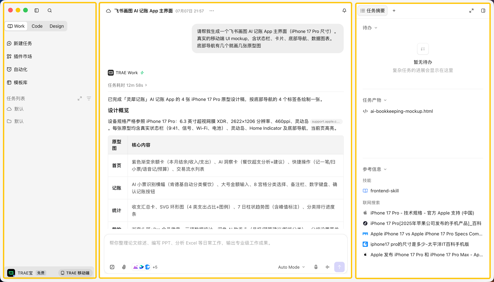
5.1 左侧栏：任务控制台
| 元素 | 作用 |
|---|---|
| Work / Code / Design | 切换不同工作模式 |
| 新建任务 | 创建一个新的空白任务 |
| 技能 | 进入技能市场，安装或管理技能 |
| 自动化 | 创建和管理定时自动执行的任务 |
| 任务列表 | 展示当前和历史任务，点击即可切换 |
| 头像 / 设置 | 语言、主题、设置、问题反馈、退出登录 |
| 移动端入口 | 扫码下载 TRAE 移动端，随时查看和推进任务 |
设置中支持暗色、亮色和跟随系统三种主题切换。
5.2 中间对话区：与 AI 协作
| 元素 | 作用 |
|---|---|
| 对话内容区 | 显示沟通过程、AI 的计划和执行状态 |
| 输入框 | 输入希望 TraeWork 完成的任务 |
| 附件上传 | 上传文件、图片或材料给 AI 处理 |
| 命令 / 技能调用 | 快速调用命令或技能（输入 / 唤起） |
| 模型选择 | 选择本次任务使用的 AI 模型 |
| 语音入口 | 使用语音输入或语音讨论 |
| 云端 / 本地切换 | 选择任务在云端还是本地执行 |
| 模板选择 | 三种模式各自内置不同模板，一键做同款 |
5.3 右侧栏：看进度和结果
| 元素 | 作用 |
|---|---|
| 待办 | 显示 AI 拆解出来的步骤，知道它正在做什么 |
| 任务产物 | 展示生成的文件或结果：文档、表格、PPT、HTML 等 |
| 参考信息 | 展示 AI 执行任务时参考过的技能、网页、资料或搜索结果 |
| 手动压缩 | Code 模式下点击可自动压缩上下文 |
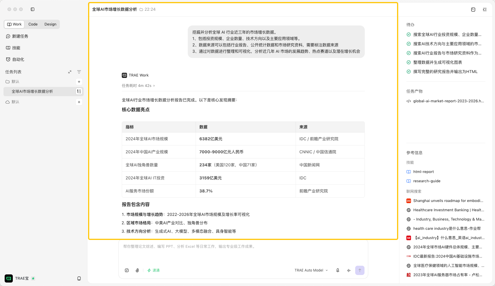
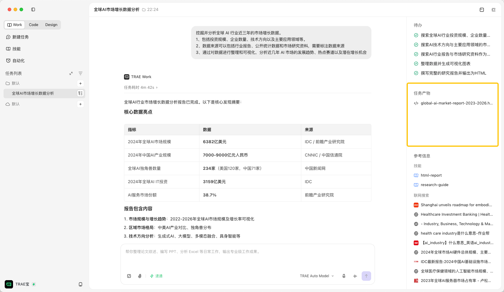
TraeWork 官方知识库
复杂任务执行时，不要只看中间对话区。右侧栏能帮你快速判断 AI 正在做哪一步、最终产物在哪里、它参考了哪些资料。
云端任务 vs 本地任务
| 环境 | 含义 | 适合场景 |
|---|---|---|
| 云端 | 任务在远程环境中执行，不占用本机资源 | 调研、写文档、生成内容、跨设备继续处理 |
| 本地 | 任务在你的电脑本地执行 | 需要访问本地文件、本地项目或本机环境的任务 |
只是写文档、做调研、整理内容，优先使用云端；任务需要读取或修改你电脑上的文件、项目，再考虑本地。
5 分钟完成第一个任务
- 打开 TraeWork 网页版：中国版访问 work.trae.cn，国际版访问 work.trae.ai（也可下载桌面端）
- 完成登录后，新建一个 Work 模式任务
- 输入一个简单任务：
帮我整理一份 TraeWork 新用户上手清单，包含第一步做什么、第二步做什么、需要注意什么。
- 观察 AI 是否展示执行过程，并查看最终产物是否可以继续追问或修改
- 如果你是开发或设计用户，再尝试切换到 Code 或 Design 模式，观察入口和任务提示有什么不同
界面打卡清单
完成后，确认你已经找到了以下 8 个元素：
- "新建任务"按钮
- Work / Code / Design 模式切换
- AI 输入框
- 附件上传入口
- 语音功能入口
- 切换本地 / 云端环境
- 右侧"任务产物"区域
- 配置 MCP 功能入口
8 个 TraeWork 入门技巧
用好 TraeWork 的关键，不只是收藏更多提示词，更多的是建立一套稳定的协作方式：如何发起任务、如何补充上下文、AI 执行过程中如何提前干预、重复工作如何释放人力。
1选择适合的产品模式
不要把所有任务都塞在一个模式里。Work 关注业务目标和交付物，Code 关注仓库、依赖和代码质量，Design 关注布局、样式和体验细节。三个模式可灵活搭配——例如 Design 生成的设计图可直接导入 Code 无缝衔接开发。
2创建项目文件夹，补充上下文
把与任务相关的资料统一放在一个文件夹中，在 TraeWork 里选择该文件夹再下达指令。比起不选文件夹，AI 找数据、放结果的效率和稳定性都会高很多。
帮我分析这个文件夹里的评论，并整理成 Excel。
3开发不着急，先用 Spec / Plan 规划
Code 模式下，在对话框输入 / 可调用两个规划命令：
- Plan 模式：适用于中小型功能开发和模块级重构，生成计划文档后直接执行
- Spec 模式：面向更复杂的系统级任务，生成完整的三阶段文档组（大纲 + 任务列表 + 验收清单），每阶段支持确认和 Refine
/spec 开发一款支持多语种学习的在线教育平台，涵盖英语、日语、韩语等主流语言……
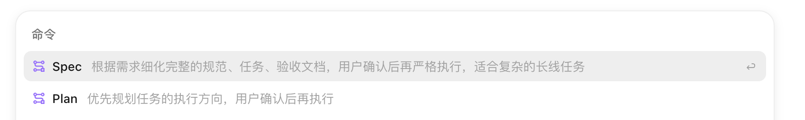
/ 唤起 Spec / Plan，先规划再执行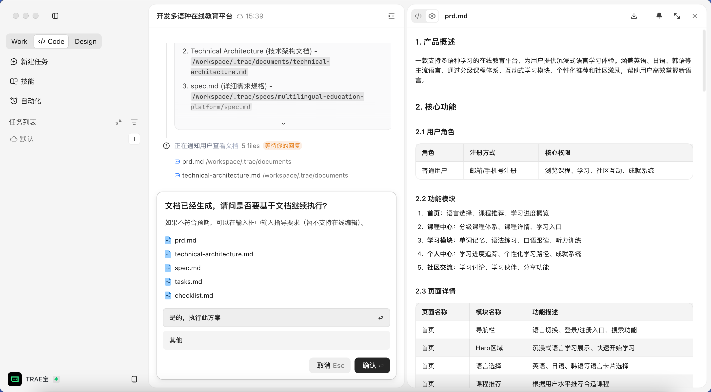
TraeWork 官方知识库
4语音功能，帮你理清思绪
很多高价值需求一开始不是清晰的 Prompt，而是一段混乱的口述。直接用语音讨论，让 TraeWork 先帮你拆问题：用户是谁、核心场景、输入从哪来、输出给谁看、哪些信息必须有。如果对需求不够明确，可以让 AI 反向追问。
5用 Rules / Memory / Skill 沉淀标准工作流
- Rules：固定硬约束（技术栈、命名风格、测试要求、语气、禁用词、组件规范）
- Memory：保存长期偏好（先结论后依据、不标题党、改动必须说明风险）
- Skill：封装专业流程，定义场景、执行要求和步骤
判断一件工作是否值得沉淀：是否高频重复？是否每次都要解释同一批要求？是否流程固定？是否经验可团队共享？满足其一即可从 Prompt 升级为规则、技能或命令。
6配置自动化工作流，减少重复工作
凡是固定时间、固定逻辑、固定产物的工作，都应考虑自动化：日报、周报、竞品动态、代码仓库巡检、舆情摘要、数据异常提醒、待办汇总。先从小任务开始，确认输出稳定后再增加判断逻辑和分发动作。
竞品监控可以先从「每周一上午汇总三个竞品官网和公开更新」开始，输出功能变化、市场动作、可能影响和建议跟进行动。
7灵活配置自定义模型
不想用内置模型或高峰期排队影响效率时，TraeWork 支持填入自己的模型服务商和 API Key 接入自定义模型。还支持自定义上下文窗口，处理长文档、大型仓库时可按需调大，不再受默认窗口限制。
8多端协同，移动端随时下发任务
无论身在何处，都能通过移动版选择目标设备和工作路径，向远程环境下发任务。系统会自动启动智能体执行指令，并随时在手机上查看进度、获取结果：
- 下发任务：手机直接下发，实时查看进度、确认执行事项
- 检查任务：不在电脑旁也能查看执行中任务的进度和产物
使用门槛：打开即用，无需学习成本
1三栏布局，清晰理解任务全流程
桌面端采用"左中右"三栏式布局，一句话记住：左边管任务，中间管对话，右边管结果。左侧新建/切换/管理任务，中间输入需求并查看 AI 的计划与执行过程，右侧查看待办、产物和参考信息。每个环节都能被看清，轻松掌握任务进度。
2三种模式分工清晰，开箱即用
Work、Code、Design 分别对应办公协作、开发执行和设计创作，覆盖不同人群。无需先理解功能入口再理解操作逻辑——不同任务进入不同模式，逻辑清晰、分工明确。历史用户反馈中，"设计好看、上手简单"是出现频率最高的评价之一。越简单的工具越容易坚持使用。
3零代码基础，也能从"想法"走到"产品"
只要你能清晰描述需求，AI 便会从零搭建、调试并部署一个可用产品——无论是签到小程序、个人作品集网站，还是运营数据看板。AI 自动拆解需求、生成代码、调试运行，全程不需要理解编程概念，配合一键部署，从想法到产品上线可在一次对话内完成。
一位运营同学想做每日打卡工具。她在 Code 模式中描述"我要一个签到页面，能记录连续打卡天数"，几分钟后便拿到了一个可分享的线上页面，中间没有写过一行代码。
4只需开口，模糊表达也能快速整理
真实工作中很多任务一开始并不是清晰、完整、结构化的指令。TraeWork 的语音讨论功能让你直接开口描述想法，哪怕表达不够完整，AI 也能在对话中帮你梳理逻辑、提炼重点、补齐结构。不需要把需求整理好再用 AI，而是在和 AI 的互动中把事情逐步想清楚。会说话就能用 AI，语音是最自然的人机界面。
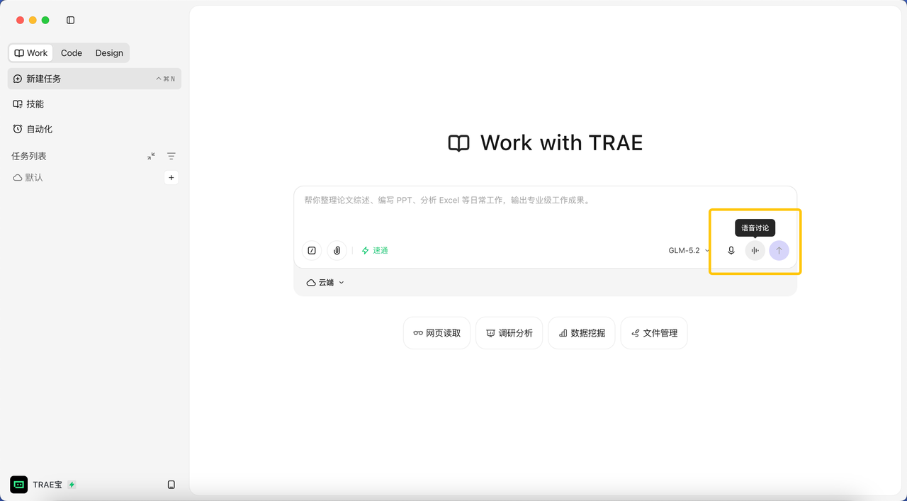
产品体验：全场景覆盖，过程可控
5AI 操作过程透明，关键节点由你决策
对 AI 工具的不信任往往源于"黑箱感"。TraeWork 在执行过程中持续给出清晰反馈，让你知道 Agent 当前在处理什么、进行到哪一步；到了关键节点不会默认替你做决定，而是提供多个选项让你确认后再继续。你可以随时中断、调整方向或要求重来。整个过程始终可见、可控、可干预。
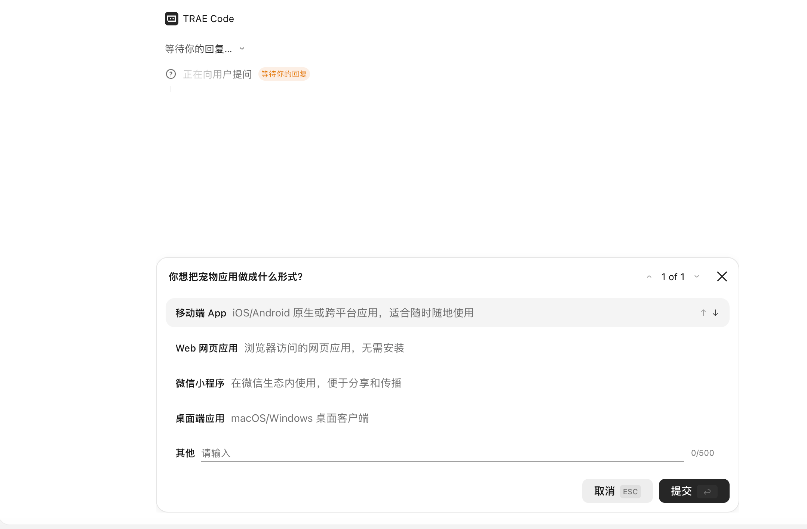
6实时预览修改，不止是"一篇草稿"
TraeWork 强调结果的可用性：
- 自动生成 HTML 页面：HTML 可承载动画、交互、数据下钻、多终端适配，随内容持续更新，而非静态幻灯片
- HTML 实时编辑预览：拿到页面后可直接编辑修改和一键分享，作为汇报、方案、Demo、PRD 等工作的最终交付物
不只是生成，而是更完整的交付物。
7文件直接拖入，无需预处理
支持 PDF、PPT、Excel、CSV、图片等全格式文件直接拖入，无需预处理或格式转换。面对几十万行数据的超大 Excel 也能稳定解析、不卡顿。
直接上传凌乱的调研问卷原始数据，AI 自动识别结构、清洗数据、输出洞察报告；30 页格式混乱的 PDF 合同直接拖入，AI 逐页识别并提取关键条款，无需先转 Word。AI 适应工作材料，而不是为 AI 准备好材料。
8项目文件夹沉淀上下文，AI 自动取用
把一个项目相关的资料、文档、数据统一上传到项目文件夹提前完成上下文沉淀。发起新任务时，AI 会根据描述自动定位相关文件并调用内容，无需手动重复上传或精确描述文件名/路径/版本。
将项目需求文档、历史周报、竞品资料放入项目文件夹后，只需说"结合项目背景写一版本周进展"，AI 会自动找到并读取对应文件。上下文一次备好，AI 自动取用。
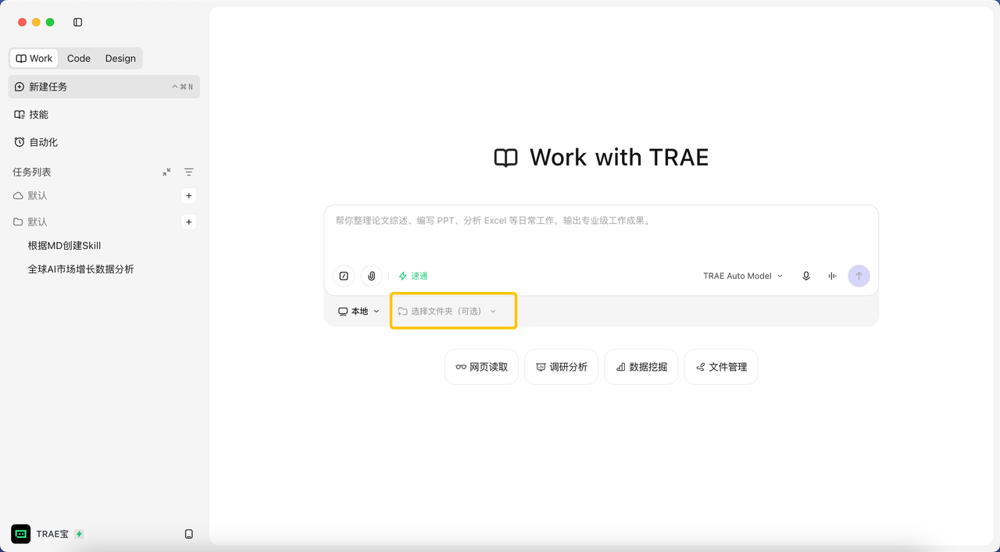
9三端协同更灵活，想法脱离设备
工作不只发生在电脑前。TraeWork 覆盖移动端、网页端和桌面端，你可以在手机上快速发起任务、远程调度任务、跟进执行情况，也可以直接打开移动端语音讨论，让 AI 先整理初稿。工作不被设备限制，随时跟进任务。
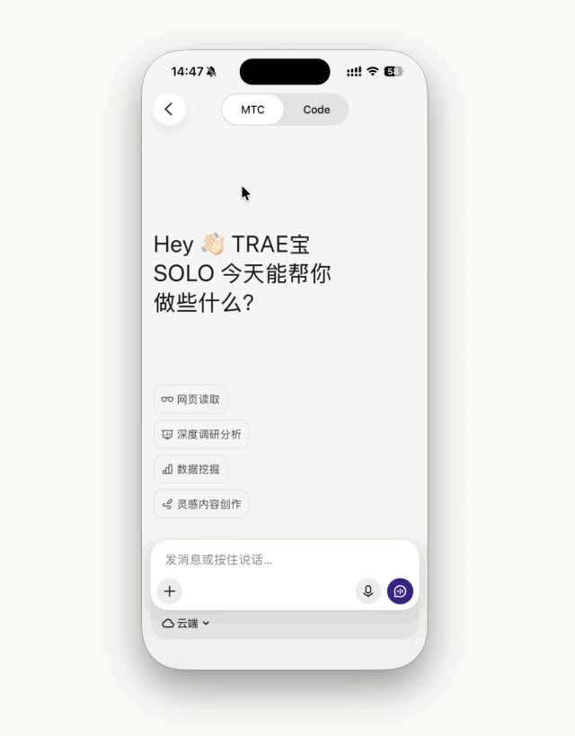
能力支持：模型领先，创作 + 模板全覆盖
10多模型自由切换，国产最新模型可用
模型升级的真正意义是"新能力能不能立刻在工作中用起来"。TraeWork 内置多款大模型，可根据任务类型自由选择，也支持配置自定义模型、使用你订阅的 CodingPlan。内置多款国内最新模型并持续更新。
11不止是文生图，还有文生视频
TraeWork 内置集成 Seedream 文生图与 Seedance 文生视频，可在同一工作流内完成"文字撰写 + 配图生成 + 短视频制作"的完整链路。文生图支持插画、写实、扁平等多种风格；文生视频可从文案描述直接产出可用素材。
筹备线下活动宣传方案，用 TraeWork 写完文案后，直接生成海报配图与 15 秒预热短视频，无需再打开其他设计或剪辑工具。
12丰富的模板库，一键做同款
用 AI 最难的一步常常是"不知道能用它做什么"。TraeWork 模板库覆盖内容创作、数据分析、产品开发、战略研究、办公协同等 10 个工作场景：
- 按场景分类，3 秒看懂能做什么：以真实产物为主体展示，能力范围一目了然
- 产物优先，看到效果再决定：HTML 案例可交互预览、视频可播放、图片可放大
- 一键做同款，零学习成本：自动预填 Prompt + Skill + 应用依赖，喜欢的模板可收藏并跨设备同步
13浏览器控制，直接开你自己的浏览器干活
AI 能上网和 AI 能用"你的"浏览器上网是两件事。很多真实工作卡在登录态上——内部系统要 SSO、平台要扫码。TraeWork 的浏览器控制把 AI 接到你已登录的 Chrome/Edge/豆包浏览器上：
- 已登录账号无需重复登录，内部系统和个人账号任务处理更顺畅
- 开启路径：「插件市场」→「浏览器控制」→ 安装 Chrome 扩展 → 输入框使用
浏览器控制插件 - 移动端远程操控：手机发指令，电脑用已登录浏览器打开页面、读取内容并回传结果
- 两种模式：干净环境批量抓取用「内置浏览器」；需登录态用「浏览器控制」
本土化生态：更懂国内用户的工作方式
14飞书、企业微信、钉钉等国产套件深度集成
TraeWork 已支持飞书、企业微信、钉钉、腾讯文档等国内主流办公工具的官方插件。AI 可以直接进入已有协作链路，参与日常读取、整理、修改与交付。内置丰富的插件市场，找到插件点击授权即可使用。
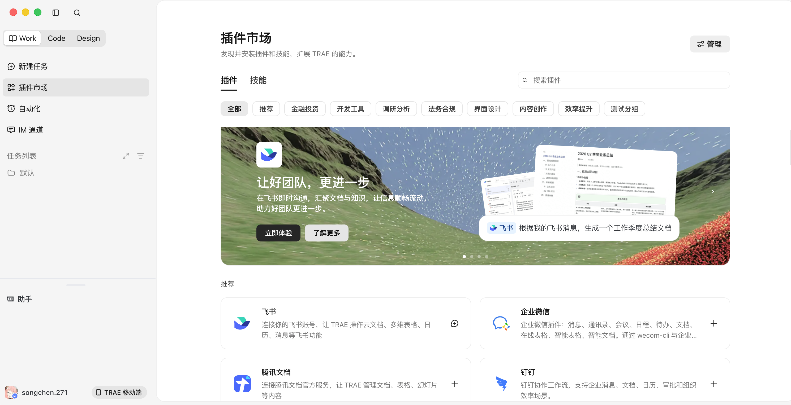
在飞书收到待整理文档，无需下载再上传——直接在 TraeWork 中引用飞书链接，AI 读取后完成整理，结果同步回飞书。
15更契合中文用户的工作方式
周报、复盘、需求拆解、活动策划、代码解释、会议结论整理——这些场景无需先翻译成英文逻辑再适配海外工具模板。无需翻墙、无需注册海外账号，支持手机号、抖音、Apple ID等国内常用方式直接登录。
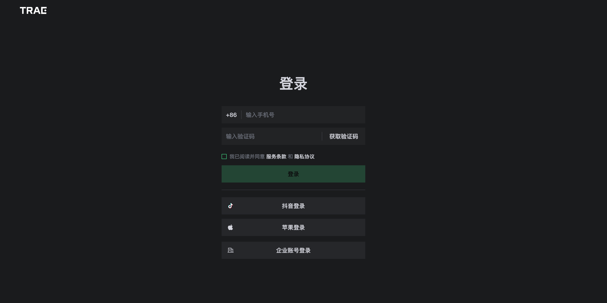
16最活跃的官方中文社区
遇到产品问题，官方团队、技术支持和热心社区伙伴会迅速响应；产品建议会被官方第一时间看见，还可在社区参与建议投票；社区沉淀了丰富的用户最佳实践，从写指令到用 Skill 复用工作流都能找到参考。用户就是 TraeWork 最在意的人。
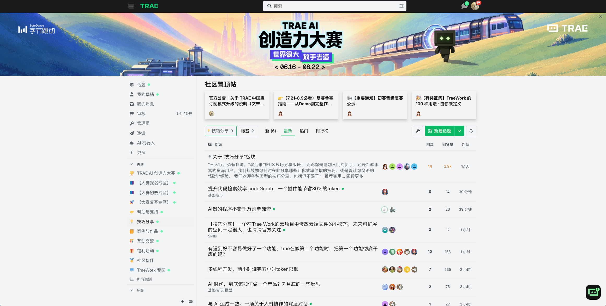
17全链路用户教育，从"知道功能"到"真正用好"
TraeWork 有完整的用户教育体系：产品内置开箱即用的模板和功能引导；中文知识库提供结构化使用指南；视频号持续教学真实操作流程；官方社区沉淀来自真实用户的最佳实践。遇到问题中文社区响应迅速，无需翻阅英文文档。好的工具不止要强大，更要让每个人都能用好。
复用与自动化：从单次使用到长期工作系统
18自定义 Skill，将个人工作 SOP 沉淀为可复用能力
把历史积累的工作规范、内容风格、输出模板导入生成专属 Skill。后续遇到同类需求无需重复输入，直接调用即可一键复用。你的写作风格、汇报格式、数据分析框架都能被 AI 记住，成为个人的效率杠杆。
每周需写固定格式的项目周报（进展、风险、下周计划三个板块）。沉淀为 Skill 后，今后只需说"写周报"，AI 便按你的模板与风格自动组织内容。
19自动化能力，让重复工作自运转
固定时间、固定逻辑、固定产物的工作都可考虑自动化：日报、周报、竞品动态、代码仓库巡检、舆情摘要、数据异常提醒、待办汇总。
- 社区运营人员可设定 AI 定期分析社区数据、筛选优质内容、识别核心用户并自动完成活动复盘
- 内容团队可按固定规则定期整理素材、生成阶段性报告
配置一次规则即可持续运行，把大量重复劳动从人手中释放。
安全：数据兜底，放心交付
随着 AI 越来越多地参与文件操作、内容修改和命令执行，大家最关心的问题变成了：如果 AI 出错了怎么办？
TraeWork 在安全兜底和恢复能力上提供了更强保障——即使在执行命令或文件操作场景中出现误操作，你依然拥有可回退、可恢复与可控空间。
TraeWork 安全沙箱机制将删除文件加入电脑的回收站，AI 操作中被误删的内容可直接找回。当你让 AI 整理大量文件、批量修改内容时，回收站便是最后一道安全网。
选择一款 AI 工具，表面上是在选模型，本质上是在选一种工作方式。TraeWork 所有打磨都朝着同一个方向：让国内用户真正用起来，并且持续用下去。与其多一个被收藏的 AI，不如多一个每天都在用的 TraeWork。
Skill 技能系统：把 SOP 变成可复用能力
Skill 是给 AI 使用的"专业能力说明书"，定义任务的场景、执行需要遵循的要求和步骤。每个人都有自己的工作规范与内容风格，若每次都重新描述需求背景，AI 再强也难带来持续效率提升。真正的提效在于"一次沉淀、反复复用"。
15.1 一个基础 Skill 的结构
--- name: 技能名称 description: 简要描述这个技能的功能和使用场景 --- # 技能名称 ## 描述 说明这个技能的作用。 ## 使用场景 说明什么时候应该触发这个技能。 ## 指令 清晰地告诉智能体应该按什么步骤完成任务。 ## 示例（可选） 给出输入 / 输出示例，帮助智能体理解预期效果。
15.2 判断一件工作是否值得沉淀为 Skill
- 是否高频重复？
- 是否每次都要解释同一批要求？
- 是否流程比较固定？
- 是否经验可以团队共享？
满足其一，就可以尝试从一次性 Prompt 升级为 Skill。
规则与记忆：固定约束，记住偏好
Rules 规则（硬约束）
用来固定必须遵守的规则：
- 代码项目的技术栈、命名风格、测试要求
- 文档项目的语气、结构、禁用词
- 设计项目的组件规范、间距规则、品牌风格
这些内容不应该每次重新说。
Memory 记忆（长期偏好）
保存"以后也会用到"的协作偏好：
- 喜欢先给结论再给依据
- 公众号文章不要过度标题党
- 代码修改必须说明风险点
- 方案文档要明确 owner 和 deadline
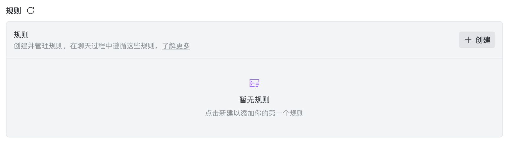
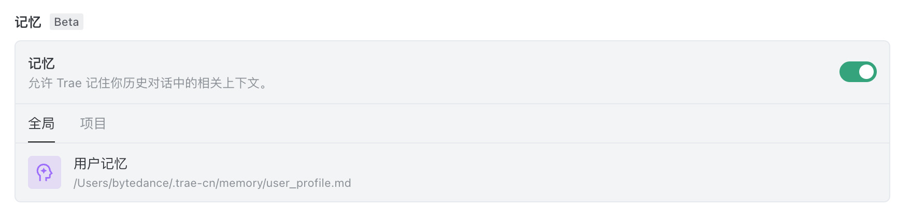
TraeWork 官方知识库
MCP 工具与插件市场
TraeWork 内置丰富的插件市场，按分类提供基础功能、注册登录、开发工具、辅助设计、界面设计、内容营销等插件，点击授权即可使用。
通过 MCP（Model Context Protocol）工具，TraeWork 可以连接外部系统和数据源，让 AI 读取、操作更多工具。典型插件包括：
- 国产办公套件：飞书、企业微信、钉钉、腾讯文档——AI 直接进入协作链路
- 浏览器控制：连接你已登录的 Chrome/Edge/豆包浏览器
- 开发工具：Chrome DevTools、浏览器管理、浏览器截图等
- 设计与内容：辅助设计、界面设计、内容营销类插件
相较海外工具难以调用国内数据源，TraeWork 与国内生态的适配程度明显更高。与其让你适应工具，直接让工具融入你的工作链路。
自动化任务：让重复工作自运转
TraeWork 支持自动化任务能力。你可以先从小自动任务开始尝试，确认结果输出稳定，再不断增加判断逻辑和分发动作。
18.1 适合自动化的工作
凡是固定时间、固定逻辑、固定产物的工作，都应考虑自动化：
日报 / 周报
定期汇总数据、整理进展、生成报告
竞品动态监控
定期抓取竞品官网和公开更新，输出变化与建议
代码仓库巡检
定期检查 PR、Issue、构建状态并汇总
舆情摘要
监控品牌关键词，定期生成摘要报告
数据异常提醒
监控关键指标，异常时自动通知
待办汇总
定期收集各渠道待办，统一汇总分发
18.2 写清楚自动化的边界
- 哪些内容可以直接生成
- 哪些必须标记为待确认
- 哪些情况要提醒人工介入
AI 最适合承担重复收集、整理和初步判断，关键决策仍应留给人。
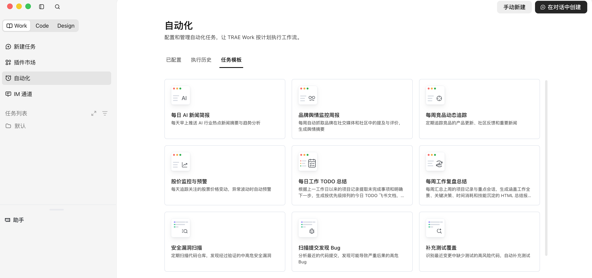
多模型切换与文生图 / 文生视频
19.1 多模型自由切换
TraeWork 内置多款大模型，可根据任务类型自由选择最适合的模型；也支持配置自定义模型，使用你订阅的 CodingPlan 或自己的 API Key。内置多款国内最新模型并持续更新，新能力能第一时间在工作中用起来。
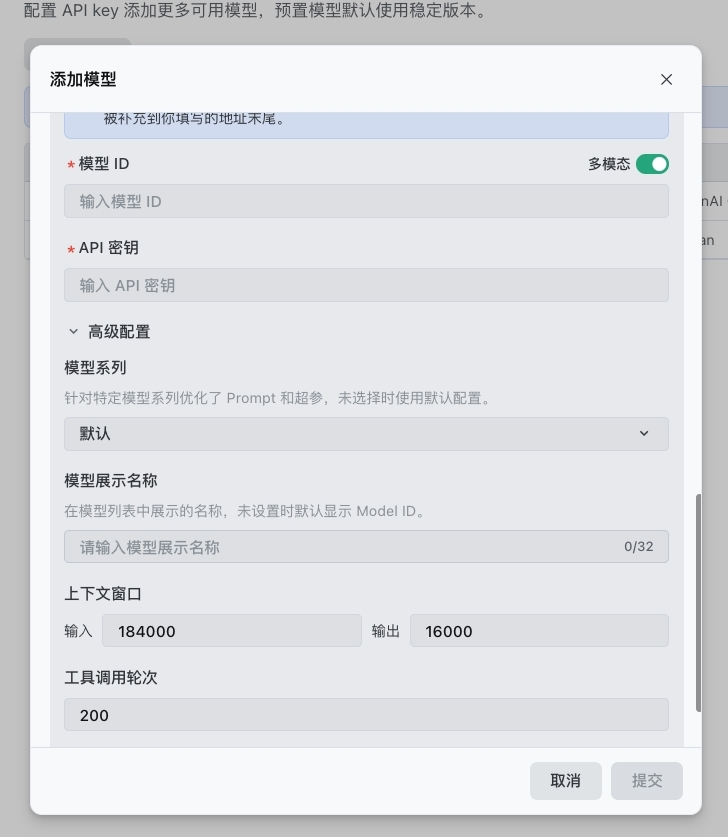
19.2 Seedream 文生图
支持插画、写实、扁平等多种风格，可直接为方案、公众号、活动生成配图。
19.3 Seedance 文生视频
从文案描述直接产出可用短视频素材。配合文生图，可在同一工作流内完成"文字撰写 + 配图生成 + 短视频制作"的完整链路，无需切换设计或剪辑工具。
浏览器控制：用你已登录的浏览器干活
很多真实工作卡在登录态上：内部系统要 SSO、平台要扫码、社区内容要登录可见。AI 自己起一个干净浏览器，第一步就被登录墙拦住；而你自己的 Chrome 里账号早就登着。
20.1 开启方式
- 进入「插件市场」→「浏览器控制」
- 完成 Chrome 扩展程序安装（TraeClosure extension for external browser automation）
- 在输入框使用
浏览器控制插件即可唤起外置浏览器执行任务
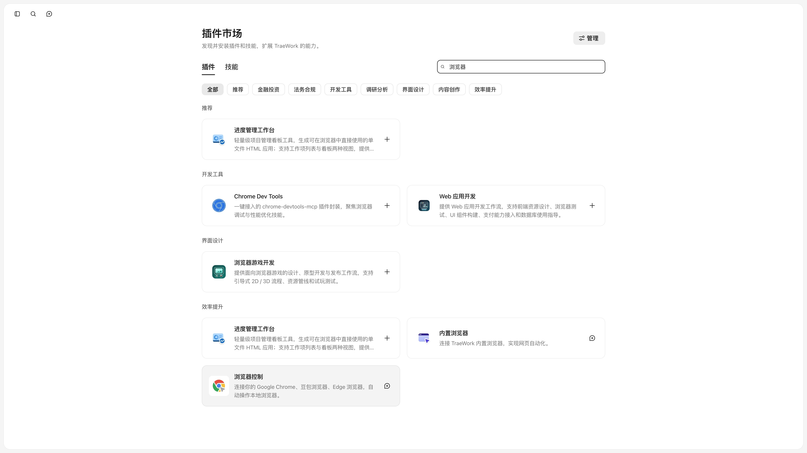
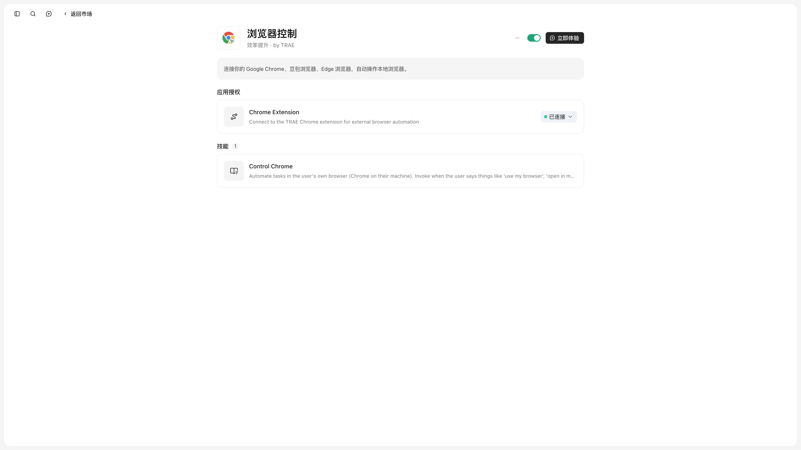
TraeWork 官方知识库
20.2 两种模式按需选择
| 模式 | 适合场景 |
|---|---|
| 内置浏览器 | 需要干净环境、不涉及登录的批量抓取和验证 |
| 浏览器控制 | 需要登录态、涉及公司内部系统或个人账号的操作 |
20.3 移动端远程操控电脑
人不在工位也能发起任务。通勤路上想起要看竞品昨天更新了什么，手机发一句"使用 Chrome 帮我看下小红书主页有哪些帖子"，TraeWork 会在电脑上启用外置浏览器，自动导航、读取页面并把整理好的结果回传到手机——不用开电脑，也不用重新登录。
模板库一键做同款 & 项目文件夹
21.1 模板库
模板库覆盖内容创作、数据分析、产品开发、战略研究、办公协同等 10 个工作场景，以真实产物为主体展示：
- HTML 案例可交互预览，视频案例支持播放，图片案例支持放大
- 点击"做同款"，系统自动预填 Prompt + Skill + 应用依赖，创建任务即可执行
- 喜欢的模板可收藏并跨设备同步，随时复用
刚注册的运营同学在模板库看到"行业市场增长数据看板"HTML 案例，预览正是自己想要的效果，点"做同款"后 Prompt 和 Skill 自动填好，稍作修改便跑出了自己业务的数据看板，全程没写一句指令。
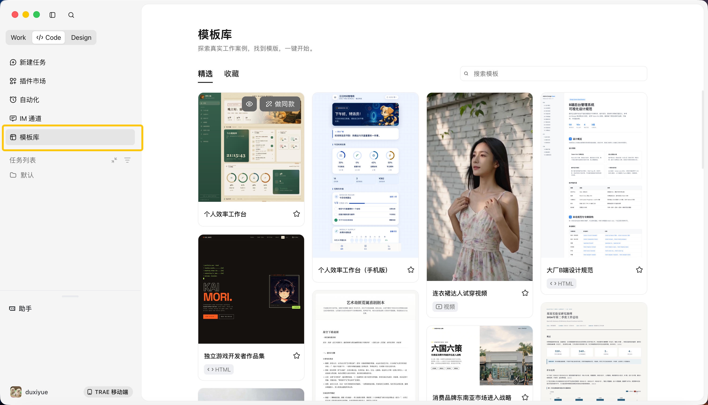
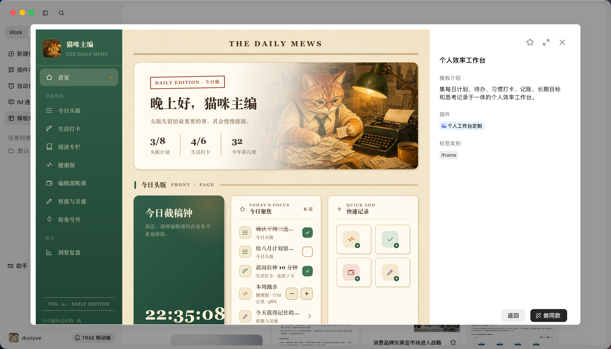
TraeWork 官方知识库
21.2 项目文件夹
把项目相关资料统一上传到项目文件夹，提前完成上下文沉淀。之后发起新任务，AI 根据描述自动定位相关文件并调用内容，无需重复上传或精确描述文件名、路径、版本。
三端协同 & 语音讨论
22.1 三端协同
TraeWork 覆盖移动端、网页端和桌面端，三端灵活协同：
- 在手机上"快速发起任务"、"远程调度任务"、"跟进任务执行情况"
- 直接打开移动端语音讨论，描述清楚想法，让 AI 先整理初稿
- 选择目标设备和工作路径，向远程环境下发指令，系统自动启动智能体执行
22.2 语音讨论
语音是最自然的人机界面。对于方案构思、活动策划、内容起稿、问题拆解等场景，直接开口描述零散想法，AI 会在对话中帮你梳理逻辑、提炼重点、补齐结构。如果需求不明确，可以让 AI 反向追问：
先直接产出最终的结论，可以把我刚说的内容整理一份需求假设、待确认问题和可能方案。
TraeWork 的 100+ 种用法：12 大场景分类
从拥有十年经验的资深工程师，到备考的学生；从财务、法务、行政，到产品、运营、自媒体——越来越多不同职业的人正在把 TraeWork 用进日常。以下 100+ 用法按 12 个分类整理，每个分类均链接到官方知识库的详细案例集。
| 分类 | 一句话概览 | 适合人群 |
|---|---|---|
| 日常办公提效 & 跨部门协作 | 周报日报、会议纪要、任务拆解、项目进度跟进、客户资料整理、跨部门协作 | 职场人、团队负责人 |
| 数据分析 & 可视化 | 报表分析、经营复盘、用户数据分析、销售数据整理、图表生成、看板搭建 | 分析师、财务、运营 |
| 内容创作 & 自媒体运营 | 公众号、小红书、短视频、直播脚本、标题优化、图文排版、内容日历、账号定位 | 自媒体、内容/电商运营 |
| 行业调研 & 竞品分析 | 行业报告解读、竞品功能分析、市场规模梳理、用户痛点挖掘、商业模式研究 | 咨询、投资、市场 |
| 产品设计 & 需求管理 | 需求分析、PRD 撰写、用户故事、原型设计、功能规划、需求评审、版本管理 | 产品经理、设计师 |
| 个人求职 & 面试 | 简历优化、岗位分析、面试题准备、自我介绍、作品集打磨、职业规划、薪资沟通 | 求职者、招聘团队 |
| 个人学习 & 备考 | 学习规划、知识讲解、错题整理、资料总结、考试冲刺、语言学习、技能训练 | 学生、备考人群 |
| 科研学习 & 学术表达 | 文献阅读、论文润色、研究综述、实验设计、开题报告、投稿回复、学术汇报 | 科研人员、研究生、教师 |
| 软件开发 & 工程实践 | 代码生成、Bug 修复、接口设计、架构梳理、测试用例、性能优化、技术文档 | 开发者、工程师 |
| 知识管理 & 方法沉淀 | 笔记整理、会议复盘、SOP 搭建、模板设计、知识库建设、工作流沉淀 | 知识工作者、团队负责人 |
| 垂直专业领域探索 | 法律、医疗、教育、金融、人力、营销、运营、咨询等领域的资料解读与判断支持 | 垂直行业从业者 |
| 业余生活 & 兴趣爱好 | 旅行规划、饮食健康、家居收纳、育儿陪伴、运动计划、购物对比、兴趣学习 | 所有人 |
100 种只是起点，官方希望和用户一起写到 1000 种。无论用法宏大还是微小、专业还是脑洞，只要真实好用都欢迎投稿——不仅有机会发布在 TRAE 官方账号，个人内容账号也可获得官方流量扶持，还有百元京东卡激励。投稿通道：最佳实践投稿 ｜ 论坛活动：TraeWork 的 100 种用法 · 由你来定义
按人群推荐阅读路径
职场办公人
优先看「日常办公提效 & 跨部门协作」「数据分析 & 可视化」「知识管理 & 方法沉淀」
内容 / 运营 / 增长
优先看「内容创作 & 自媒体运营」「行业调研 & 竞品分析」「产品设计 & 需求管理」
开发者 / 产品经理
优先看「软件开发 & 工程实践」「产品设计 & 需求管理」，配合 Code / Design 模式
学习 / 科研 / 求职
优先看「个人学习 & 备考」「科研学习 & 学术表达」「个人求职 & 面试」
垂直行业人群
直接看「垂直专业领域探索」，覆盖法律、医疗、教育、金融、人力、营销、咨询等
所有人
「业余生活 & 兴趣爱好」——旅行规划、饮食健康、家居收纳都有人用 TraeWork 高质量完成
这里收录的每一个案例，追求的都不是"能跑就行"，而是可交付、可复用、经得起检验的成果。
官方社区与交流群
25.1 TraeWork 官方中文社区
更多 TraeWork 技巧、干货或实战案例，可前往 TraeWork 社区版块 发现和讨论。用户反馈答疑请前往社区 帮助与支持 板块提问。
- 遇到产品问题：官方团队、技术支持、热心伙伴迅速响应解答
- 想给产品提意见：建议被官方第一时间看见，可参与建议投票
- 分享 & 学习干货：社区沉淀丰富的用户最佳实践
25.2 官方交流群
TraeWork 官方交流群已正式开群，和更多 TRAE 友交流使用心得，还有京东卡、TRAE 精美周边、会员权益等社群好礼。可在知识库中扫描"TraeWork 用户交流群"二维码加入（该二维码永久有效）。
线上直播、城市活动与 Specialist 招募
26.1 线上直播
官方每周安排多场直播（本周 13 场，周一到周天天天都有），覆盖功能教学、场景实战、用户分享等内容。直播日历可在 TRAE 微信公众号查看。
26.2 TRAE Friends 城市活动
线下城市活动持续举办，可在知识库"近期活动"板块查看最新安排。
26.3 TraeWork Specialist 首期招募
官方希望找到一批已经深度使用 TraeWork 的用户，一起把由真实任务验证的 AI 工作流沉淀下来，让每一次具体实践成为更多人理解 AI 工作方式的入口。
不限行业｜不限岗位｜不限组织。报名问卷与详细说明可在官方知识库"TraeWork Specialist 首期招募"文档中查看。
26.4 最佳实践投稿激励
欢迎参与内容共建，分享你使用 TraeWork 在日常工作场景的最佳实践：
- 有机会发布在 TRAE 官方账号
- 个人内容账号可获得官方流量扶持
- 还可获得百元京东卡激励
全平台官方账号
| 平台 | 入口 |
|---|---|
| TRAE 官网 | trae.cn |
| TraeWork 网页版（中国版） | work.trae.cn |
| TraeWork 网页版（国际版） | work.trae.ai |
| 官方社区 | forum.trae.cn |
| B 站官方账号 | b23.tv/1DFMuKT |
| 小红书官方账号 | xhslink.com/m/9FTjEUiFGre |
| 抖音官方账号 | 在抖音搜索"TRAE"关注 |
| 微信公众号 | 微信搜索"TRAE"或扫描知识库中的公众号二维码 |
同时提供产品下载、知识库更新通知（点击知识库右上角"..."可开启"关注文档更新"）等渠道。
「我的文件」正式上线：一个空间装下所有工作产物
本文整理自 TRAE 微信公众号推文（mp.weixin.qq.com/s/N2dMLK6YQnSfEoAjYX1ouQ）。
做完的东西，下次还想改，你通常会经历什么？在飞书里翻、在对话记录里翻、在本地文件夹里翻——找文件，比改文件还慢。产物一旦做完，就散落在任务、对话和各类文件夹里，下次想接着改，得先花时间把它扒出来，再把上次的背景重新交代一遍。
今天，TraeWork「我的文件」正式上线。它把你在 TraeWork 里做出的 HTML 产物、图片、视频产物，全部汇聚到一个空间——找到就能改，打开即续写，上下文自动关联，离交付更近一步。
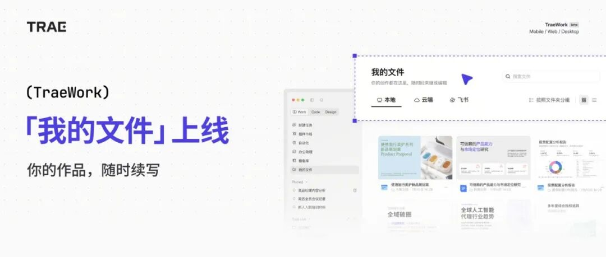
28.1 一个空间，装下你所有的工作产物
过去，产物存在一个个 Task 里，你得先想起"那次对话叫什么"，才能找回它。现在进入「我的文件」，所有产物一目了然，按来源分成三类：
本地产物
本机创建和编辑的产物，随手可取
云端产物
保存到云端的产物，Desktop 和 Web 两端同步访问，换设备也不丢
飞书产物
同步到飞书的产物，团队一起看、一起改，协作不断线
不管是 HTML 页面、图片还是视频，都在同一个页面陈列。你不再需要记住它存在哪，只需要打开「我的文件」。
28.2 两种视图，怎么找都顺手
同一份产物，TraeWork 准备了两种"找回它"的方式：
- 网格缩略图：只记得大概长什么样？缩略图铺开，看一眼封面就认出来
- 列表视图：清楚知道要找哪份？名称、修改时间、来源一列排开，一下锁定
支持置顶、搜索和分组，下次再找不用翻。

28.3 打开即续写，上下文不用重讲
这不只是一个"文件夹"。每个产物都可以关联到对应的 Task。打开文件，可以查看完整对话和生成过程，无缝衔接上一次的工作——不用重新解释这是什么报告，也不用从头描述需求。
除了回到原 Task，你还可以：
- 置顶产物，把高频文件固定在最前
- 打开对应任务，回到它诞生的那次对话
- 带着产物新建对话，换一个思路继续做
- 分享 / 打开本地文件夹 / 删除，常用文件操作集中完成
28.4 越反复改，越离不开
「我的文件」为高频迭代的知识工作者而生：产品经理持续更新竞品分析，运营每周维护活动页面，数据分析师定期更新看板——这些工作都不是"从零生成"，而是围绕已有成果持续迭代。
将 TraeWork 更新至最新版本，进入「我的文件」，让你的每一份产物，都能一秒找回、打开即续。

本周 13 场官方直播（8 月 10–16 日）
TRAE 官方直播是与用户持续交流 AI 工作方式的固定栏目，每一期都从真实场景出发，围绕一个具体问题展开：可能是产品能力的使用方法，也可能是行业场景的解决思路或实践复盘。本周共安排 13 场主题直播，覆盖知识库搭建、金融与电商实战、内容创作、数据分析、产品新能力、用户增长等方向。
| 日期 | 场次 | 主题 | 主讲 |
|---|---|---|---|
| 8/10 周一 20:00 | No.26 | 用 TraeWork 搭建个人知识库——效率提升，有用的知识库这样搭 | 司命不卖命（人力资源外包 COE、TraeWork Specialist） |
| 8/11 周二 19:00 | No.27 | TraeWork 在手，金融分析不愁——从行情解读到研究初稿，高频任务一套跑通 | Max（TRAE 行业运营） |
| 8/11 周二 20:00 | No.28 | TraeWork 在手，电商运营不愁——从选品到广告分析全搞定 | Rita（TRAE 行业运营） |
| 8/11 周二 21:00 | No.29 | TraeWork 在手，创作不愁——从选题构思到内容生产、一键发布全搞定 | 鑫梃（TRAE 产品经理） |
| 8/12 周三 19:00 | No.30 | 多人协同办公场景中 Skill 的孵化——以部门级周报整理 Skill 制作为例 | 雨灯（浙江省公众信息产业需求分析师） |
| 8/12 周三 20:00 | No.31 | 用 TraeWork 把复杂数据变成决策——一套从清洗到洞察的数据分析方法论 | 杨辉（TRAE 战略分析师） |
| 8/12 周三 21:00 | No.32 | TraeWork 在手，新鲜金融资讯不愁——专业数据源，从查数到报告全搞定 | Sherrie（TRAE 产品经理） |
| 8/13 周四 19:00 | No.33 | 让 TraeWork 成为短剧先锋军——拒绝 AI 焦虑，找到剧本 AI 创作上限 | 林溪（短剧剧本工作室负责人） |
| 8/13 周四 20:00 | No.34 | 解锁 TraeWork 最新能力——产品经理视角 × 真实场景拆解，用对新功能 | 治乾（TRAE 产品经理） |
| 8/13 周四 21:00 | No.35 | 解锁 TraeWork 最全电商插件 | 正御（TRAE 产品经理） |
| 8/14 周五 20:00 | No.36 | 玩转 TraeWork 知识库——新手必修课，官方带你学用知识库 | 小菠（TRAE 用户运营） |
| 8/15 周六 20:00 | No.37 | 运营，也能自己造工具——如何用 TraeWork 实现用户增长 | Roy（商业化运营专家、TraeWork Specialist） |
| 8/16 周日 20:00 | No.38 | 产品经理如何用 TraeWork 重塑工作流 | 可可、治乾（TRAE 产品经理） |
关注 TRAE 微信公众号，在"直播日历"推文中预约感兴趣的场次。往期直播（No.20–No.25）涵盖电商运营、秋招、小红书内容生产、个人工作台搭建等主题，可在公众号"往期直播"中回看。
官方知识库上线 · 社区学习活动回顾
7 月 15 日，TRAE Work 官方 AI 工作知识库正式上线，由 TRAE Work 官方团队出品，是面向真实办公场景系统化沉淀的最全 AI 知识库。首期内容包含：
7 大真实工作场景
覆盖学习成长、写作沟通、数据处理、视觉设计、汇报演示、信息采集、开发自动化与办公协作
30+ 篇实战指南
从"接到工作任务"到"最终交付落地"，每一步都有官方指南稳稳接住
40 万+ 字
系统化的专业工作方法，而非零散 Prompt 合集，可一步步跟着完成
配合知识库上线，官方在社区发起了「评论送 500 份美丽周边」活动：阅读知识库任意章节，在活动帖评论区分享学习心得并带上话题 #TRAE Work 知识库学习#，即可参与抽奖。活动设置两类奖励：
- 积极评论奖（500 名）：发布有效评论并完成信息登记，前 500 名获 TRAE 官方周边一份
- 优质评论奖（70 名）：每个工作日评选 10 条优质评论，额外送出 50 元京东卡
活动已开奖，共有 70 位社区伙伴获得优质评论奖。官方在公告中强调："真实的工作，很少能靠一句 Prompt 解决。我们从来不缺 Prompt 合集和功能教程，真正稀缺的是一套围绕真实任务、能够一步步跟着完成的专业工作方法。"
知识库欢迎用户持续分享实战经验。最佳实践投稿不仅有机会发布在 TRAE 官方账号、个人内容账号获得官方流量扶持，还可获得百元京东卡激励；深度用户还可报名 TraeWork Specialist，一起把真实任务验证的 AI 工作流沉淀下来。
TRAE Friends 城市活动：8 月下旬至 9 月排期
TRAE Friends 是 TRAE 官方在各城市举办的线下社区活动。本月主题聚焦 TraeWork，来自不同行业、不同岗位的 AI 实践者相聚现场，通过真实案例分享、开放麦交流和现场实操，分享各自使用 AI 的方法，也聊聊实践中的问题与思考。无论你是刚接触 AI，还是已经在日常工作中使用 AI，都可以带着经验、问题和好奇心来到现场。
31.1 活动亮点
从真实任务出发
带上一个最近想解决的工作任务，在现场一起尝试，看看 AI 能帮你完成什么
看见多元实践
了解产品、运营、内容、设计、咨询等不同岗位使用 AI 的真实方法与经验
连接同城伙伴
与本地 AI 实践者面对面交流，分享一线工作中的经验、问题与思考
带走具体成果
现场完成一项实际任务，带走一份可以复用的工作模板与方法
31.2 城市排期
城市持续更新中，日期或有调整。8 月至 9 月已公布的排期如下：
| 日期 | 城市 |
|---|---|
| 8 月 15、16 日 | 贵阳、济南 |
| 8 月 29 日 | 昆明、唐山、烟台、常州、青岛、邯郸、乌鲁木齐、大连、上海、济宁、安阳、厦门、湖州、苏州 |
| 8 月 30 日 | 珠海、温州、宁波、兰州、天津、威海、西宁、廊坊、长沙、哈尔滨、南京、金华 |
| 9 月 5 日 | 日照、沈阳、北京、泉州、咸宁、西安、洛阳、济南、百色、郑州 |
| 9 月 6 日 | 成都、武汉、贵阳、潍坊、江门、太原、淄博、清远、东莞、南宁、佛山、杭州 |
31.3 活动形式
每场活动约 4 小时，现场设有 TraeWork 技巧分享、嘉宾分享或开放麦、小组讨论、实操体验、成果展示和自由交流等环节。参考流程：
- 13:30–14:00 现场签到与自由交流
- 14:00–14:30 TraeWork 产品与技巧分享
- 14:30–15:00 行业嘉宾或开放麦分享
- 15:00–15:20 真实场景主题讨论
- 15:20–15:40 活动合影与茶歇交流
- 15:40–16:00 TraeWork 现场实践
- 16:00–17:00 实践成果展示与交流
- 17:00–17:30 同城伙伴自由交流
各城市活动的具体时间、地点与报名方式将陆续在官方知识库发布；报名需经审核，最终参与资格以审核结果为准，不同城市活动流程可能略有调整。具体安排以报名页信息为准。往期活动回顾可在 TRAE 微信公众号查看「TRAE Friends」系列推文。
「TraeWork 的 1000 种用法」有奖征集：由你来定义
官方此前推出《TraeWork 的 100 种用法》，汇聚了大量鲜活的真实场景：有人用它做分析与汇报，有人用它做调研与整理，还有人把它接入日常流程，变成一种稳定、可复用的工作方式。在官方看来，TraeWork 的边界从来不是由官方定义的，而是来自每一位真实用户的真实经验——从 100+ 种到 1000+ 种，征集继续。
活动周期：2026 年 8 月 13 日 – 9 月 30 日。把你真正用过、跑通过、交付过的案例留下来，让更多人从你的经验里，找到下一种属于自己的 TraeWork 用法。
32.1 投稿方向
官方希望收到真实、具体、可复用的用法，不追求华丽，只在意它是否真的帮你解决了问题。方向包括：
- 日常办公提效与跨部门协作
- 数据分析与可视化
- 内容创作与自媒体运营
- 行业调研与竞品分析
- 产品设计与需求管理
- 个人求职与面试、个人学习与备考
- 科研与学术
- 软件开发与工程实践
- 知识管理与方法沉淀
- 垂直专业领域探索、业务生活与兴趣爱好
32.2 投稿模板
官方给出的模板本质上是在讲一个完整的故事：你遇到了什么问题 → 你是怎么用 TraeWork 解决的 → 结果好了多少 → 最终交付了什么 → 你踩过哪些坑。按这个顺序写，别人一眼就能看懂，也更容易照着复现：
- 标题：我用 TraeWork ______（一句话真实用法）
- 我是谁，我卡在哪：个人背景 + 当前痛点
- 我用 TraeWork 怎么解决的：模式（Work / Code / Design）+ 具体实践步骤（关键步骤配截图）
- 提效前后对比：用最直观的方式（最好是表格）说明变化
- 成果展示：最终交付的产物，配截图或视频
- 实践经验总结：踩过的坑、摸索出的小窍门（1–3 条）
- 分享你的实操对话（必填）：分享对话链接 + 关键步骤说明
32.3 参与方式与奖励
在 TRAE 社区「TraeWork 专区」按模板发帖，标题带话题 #TraeWork的1000种用法。同一作者可投多篇，不同场景不限。
积极参与奖
符合投稿要求（真实作品、非搬运）即可获得 500 积分，每人仅限一次，活动结束后统一发放
每周专栏收录奖
入选即 +3000 积分，无上限；每周三发放上一周入选内容
为顺利发放积分，请确保登录 TRAE 和登录社区使用的是同一个手机号。积极参与奖与专栏收录奖不重复发放。
创造力大赛现场开造：你出难题，开造者用 TraeWork 当场解决
很多好用的工具，最初都来自一句"要是有个东西能帮我解决就好了"。这次官方把话筒交给你：在活动帖里说出一个你在生活、工作、学习、娱乐中遇到的真实难题，官方会挑出有代表性的需求带到 TRAE AI 创造力大赛线下嘉年华的「世界公告栏」上，现场开造者任选一个难题发起挑战，用 TraeWork 当场把它变成一份能看、能体验的作品。你不用交作品，也不用会写代码——把难题讲清楚就行，解决的事交给现场的开造者和 TraeWork。
33.1 可以出哪些难题
难题不用宏大，越真实、越具体，越容易被接招、被解决：
生活
买菜、做饭、出行、旅行、家务、个人管理……哪件小事总在偷走你的时间
工作
会议纪要、资料整理、数据分析、排期协作、报告制作……哪些事你觉得"不该一直靠手动"
学习
备课、辅导作业、自我提升……哪个知识点总讲不明白、记不牢，或找不到适合自己的学法
娱乐
聚会、旅行记录、音乐、游戏、内容创作……有没有一种还没人替你做出来的新玩法
33.2 怎么出题
直接在活动帖评论区回复两个关键点即可：【身份】（如 28 岁上班族 / 33 岁全职妈妈）+ 【难题】（它发生在什么场景、现在为什么不方便，50–100 字讲清楚）。同一个人可以出多道题，不同难题请分开回复。
入选标准：来自真实经历、场景具体，一看就懂卡在哪；对别人有参考价值，适合用 TraeWork 做成方案、页面、工作流或小工具；内容原创，不涉及个人隐私、商业机密和他人版权。
33.3 从难题到现场作品
入选难题会被贴上线下的「世界公告栏」，由现场开造者认领挑战，用 TraeWork 一步步做成可展示、可体验的成果。官方会记录整个开造过程，并在 8 月 26 日 18:00 前发布「世界公告栏开造回顾」，包括公告栏墙面照片（含入选难题）、现场开造过程、作品生成与体验照片。
| 阶段 | 时间（北京时间） |
|---|---|
| 难题征集 | 2026 年 8 月 14 – 17 日 |
| 入选公示 | 2026 年 8 月 18 日 |
| 线下开造 | 2026 年 8 月 21 – 22 日 |
| 成果返图 | 2026 年 8 月 26 日 |
| 奖励发放 | 2026 年 8 月 30 日 |
只要出的难题被正式收录或入选，就有机会获得 TRAE 定制周边电脑包（不限数量）。具体获奖名单将在活动帖统一公示。
本周社区之星：每周评选，分享、互动、助人赢好礼
为了表彰大家在社区中的优秀表现，TRAE 官方推出「本周社区之星」每周评选，感谢每一位在社区积极分享、互动、帮助他人的用户。评选结果每周在社区公示，获奖者将获得专属奖励与勋章。
34.1 荣誉类型
Build 之星
积极分享 TraeWork 使用技巧、案例与作品
助人之星
热心帮助其他成员解决问题
活力之星
积极发起话题、参与互动讨论
最佳新人
表现突出的新加入成员
34.2 奖励与登榜
入选「Build 之星」「活力之星」「助人之星」「最佳新人」的用户，将分别获得 50 元京东卡 + 专属社区勋章。官方会在 3 个工作日内通过私信联系获奖者发放奖励。
想成为下周之星，记得在社区里：
- 分享 TraeWork 使用技巧或案例
- 积极发起话题、互动讨论
- 帮助其他成员解决问题
本周 10 场官方直播（8 月 17–22 日）
承接上周的 13 场直播，TRAE 官方直播继续从真实工作场景出发，围绕一个具体问题展开：可能是产品能力的使用方法，也可能是行业场景的解决思路或实践复盘。本周共安排 10 场主题直播，覆盖自动化资讯日报、跨境电商选品与广告、自媒体选题与成片、金融投资研究、服装设计卖点、个人投研体系、产品新能力以及原型快速生成等方向。
| 日期 | 场次 | 主题 | 主讲 |
|---|---|---|---|
| 8/17 周一 20:00 | No.39 | 用 TraeWork 搭建行业资讯日报流水线——把机械的活交给 AI 做 | 灰灰（制造业数据运管、TraeWork Specialist） |
| 8/18 周二 19:00 | No.40 | AI 辅助跨境电商，助力快速选品和广告分析 | Rita（TRAE 行业运营） |
| 8/18 周二 20:00 | No.41 | 热点这么多，我为什么只做这一个——60 分钟教会你用 TraeWork 做自媒体选题 | Damon（资深 AI 自媒体创作者、内容工作流长期实践者） |
| 8/18 周二 21:00 | No.42 | 把 dirty work 交给 Trae，把 alpha 判断留给自己——金融投资专题（一二级从业者与小白友好） | Rosa（TRAE 战略分析、前一级市场从业者） |
| 8/19 周三 19:00 | No.43 | 服装设计师视角 × 款式卖点拆解——用 Trae 把设计点转为消费者的购买理由 | 米敏（服装设计师、TraeWork Specialist） |
| 8/19 周三 20:00 | No.44 | 选题定了，怎么把它做成一条视频——用 TraeWork 从选题立项推进到脚本与成片 | Damon（资深 AI 自媒体创作者、内容工作流长期实践者） |
| 8/20 周四 19:00 | No.45 | 个人投研体系构建 | 羽凡（独立投资人、TraeWork Specialist） |
| 8/20 周四 20:00 | No.46 | 如何用 AI 做数据驱动的电商策略 | Rita（TRAE 行业运营） |
| 8/20 周四 21:00 | No.47 | 解锁 TraeWork 最新能力——产品经理视角 × 真实场景拆解，带你用对新功能 | 治乾（TRAE 产品经理） |
| 8/22 周六 20:00 | No.48 | 原型活了：TraeWork 让 AI 一句话生成可运行应用 | 治乾（TRAE 产品经理）、陈俊铭（TikTok 平台安全大模型产品经理）、魏进锋（前阿里达摩院 AI 算法专家） |
关注 TRAE 微信公众号，在「直播日历」推文中预约感兴趣的场次；往期直播 No.26–No.38 涵盖个人知识库、金融与电商运营、短剧创作、Skill 孵化、数据分析方法论、TraeWork 新功能与电商插件、用户增长、大师课等主题，可在公众号「往期直播」中回看。
TRAE on Campus 校园伙伴招募启动：以热爱为土壤，与先行者同行
本文整理自 TRAE 微信公众号推文《TRAE on Campus 校园伙伴招募启动：以热爱为土壤 与先行者同行》。
校园里太久没有让人兴奋的事了——考试、绩点、DDL，学习像望不到头的消耗战。但有一群人，正在用完全不同的方式打开校园生活：AI 接住论文排版、数据清洗、原型搭建、材料整理、机械备课、重复批改，把教师从材料堆里抬起头，也让学生看见课堂里那些鲜活的人。校园里最先动起来的那批人，已经在用 TraeWork 重写"学"和"教"的定义。TRAE on Campus 校园伙伴招募正式启动，欢迎报名。

35.1 招募对象
TRAE 校园伙伴面向所有高校在校学生与教师，不限院校、专业和学科方向：
学生
可能来自计算机、设计、商科、文科、新闻传播或任何学科。你想用 TraeWork 写论文、做课程设计、组建项目团队、整理文献综述、分析实验数据、制作课程演示、准备面试材料、开发个人作品集，或是参加竞赛、管理社团事务……
教师
你可能在用 TraeWork 设计教案、批改作业、生成课堂材料、整理科研数据、撰写项目申报书、搭建教学工具、制作互动课件，或是辅助学生完成毕业设计……
35.2 共创形式
成为 TRAE 校园伙伴后，你将和 TRAE 团队协作，把已经跑通的真实校园项目整理成更有参考价值的案例和方法。过程中，双方共同敲定选题、梳理路径、打磨表达，并通过合适的渠道，让优秀内容被更多校园用户看见。共创内容可以有多种形式：
| 形式 | 说明 |
|---|---|
| 校园活动 | 组织校内培训和学习交流活动，带动更多同学和老师参与 |
| 直播分享 | 围绕真实校园场景做演示、经验分享、学科讲解和方法复盘 |
| 图文视频 | 拆解真实项目、展示应用过程，分享高频学习与教学场景的使用技巧 |
| 深度文章 | 沉淀完整的使用经验、研究或学术、可复用的校园最佳实践 |
| Skill 分享 | 沉淀高频教学任务中的提示词、Skill 配置和使用方法 |
| 工作流模板 | 把学习与教研任务整理成可参考、可复用的流程模板 |
35.3 支持权益
成为校园伙伴，你的真实校园实践将有机会通过官方渠道被更多人看见，也会在案例、直播、文章和活动中持续传播，成为更多校园用户理解和使用 TraeWork 的参考。更重要的是，你会和一批来自不同院校、不同学科的实践者站在一起，持续探索 AI 在教育场景中的新做法、新应用和新可能。你还将获得以下支持：
身份认证
成为首批 TRAE on Campus 校园伙伴，获得官方专属身份认证
同频社群
加入 TRAE on Campus 社群，与各院校各学科的伙伴交流碰撞
共创支持
获得选题建议、资料支持与策划对接，共同产出校园参考内容
渠道露出
优秀内容有机会获得官方多渠道曝光与协助传播
流量扶持
个人账号发布的相关优质内容，有机会获得更多流量扶持
产品反馈
优先体验 TraeWork 新功能并参与共创，把需求带进产品迭代
校园活动
优先受邀参与 TraeWork 组织的各类校园交流、嘉宾和行业活动
会员礼品
有机会获得 TraeWork 专属会员权益及官方定制周边礼品
扫描推文中的二维码填写申请表，开启 TRAE 校园伙伴之旅。TRAE on Campus 校园伙伴将按学期进行持续招募，官方会根据申请者填报的资料进行初筛，并与合适的申请者面试沟通。具体安排以官方通知为准。
TraeWork 七夕生图大赏：一句话出片，Trae 请你看《奥德赛》
本文整理自 TRAE 官方中文社区置顶加精活动帖《TraeWork 七夕生图大赏》，由官方账号 TRAE_小晨儿于 2026 年 8 月 18 日发布。
七夕将至，让 AI 把心情具象成画面。TraeWork 已内置最新 Seedream 5.0 图片生成与 Seedance 系列视频生成模型，一句话即可出片。官方在社区「TraeWork 专区」发起七夕生图大赏，邀请用户用一句话生成七夕主题创意图片或短视频，优秀作品可获得实体电影卡奖励。
36.1 活动主题与玩法
无论是热恋、暧昧、单身还是独美，都可以在 TraeWork 中把此刻的心情做成一张图：浪漫的七夕场景（鹊桥、银河、烟火、牛郎织女），或是一张替你说话的表情包，怎么应景怎么来。参与方式如下：
第一步：创意出片
打开 TraeWork，借助 Seedream 生图能力或 Design 功能，输入七夕创意描述，一句话即可出片；满意后保存作品，生成的素材可直接留在工作流里继续排版或二次创作。
第二步：发帖展示
前往 TRAE 社区「TraeWork 专区」发帖，标题带上话题 #TraeWork七夕生图大赏；帖子需包含创作教程（附 TraeWork 创作截图）与最终效果展示（图片、GIF 或视频）。
想更进一步，TraeWork 同样支持文生视频、图生视频，画幅与时长可选，可把七夕创意做成一段短视频一并展示。
36.2 活动时间与奖励
| 项目 | 说明 |
|---|---|
| 活动时间 | 2026 年 8 月 18 日 — 8 月 19 日 |
| 参与奖励 | 共 40 张面额 90 元的实体电影卡，可用于观看电影《奥德赛》 |
| 领取形式 | 实体卡邮寄给获奖用户，通过微信「蚂蚁优福」小程序激活绑定后使用 |
| 有效期 | 电影卡有效期至 2027 年 6 月，票价超出面额部分需自行补足 |
36.3 创作小贴士
描述越具体，出图越惊艳：写清场景、风格、色调与情绪，例如「银河鹊桥下相拥的牛郎织女，国风水墨，暖色调」。表情包方向可尝试可爱、幽默风格；一句话不够尽兴就多试几版，TraeWork 免费开放，尽情发挥创意。
活动上线后，社区用户已产出大量七夕主题作品，涵盖国风水墨鹊桥、赛博朋克银河、复古胶片约会海报、七夕表情包等多种风格。该活动是 TraeWork 在社区中围绕 Design 模式与 Seedream 文生图能力开展的创意运营活动，旨在让用户在真实场景中体验 AI 生图从创意到落地的完整流程。
常用链接与资源
| 资源 | 链接 |
|---|---|
| TraeWork 官方知识库（本书主要来源） | bytedance.larkoffice.com/wiki/RxVXweukSi7JtIkhOKBcuSlbnfC |
| TRAE 官网 | trae.cn |
| TraeWork 下载（桌面端） | trae.cn/ide/download |
| TraeWork 网页版（中国版） | work.trae.cn |
| TraeWork 网页版（国际版） | work.trae.ai |
| TraeWork 官方社区 | forum.trae.cn/c/43-category/43 |
| 社区帮助与支持 | forum.trae.cn/c/7-category/7 |
| 选择 TraeWork 的 20 个理由 | 飞书 Wiki |
| TraeWork 的 100+ 种用法 | 飞书 Wiki |
| 万字长文｜数据分析 7 大场景实战 | 微信公众号 |
| 新手必看｜8 个 TraeWork 入门技巧 | 微信公众号 |
| 「我的文件」上线推文 | 微信公众号 |
| B 站官方账号 | b23.tv/1DFMuKT |
| 小红书官方账号 | xhslink.com/m/9FTjEUiFGre |
常见问题 FAQ
TraeWork 是不是只能给开发用？
不是。Code 模式面向开发任务，但 Work 模式更适合文档、数据、汇报、分析等通用办公场景；Design 模式面向设计和原型场景。
会用普通 AI 聊天工具，还需要 TraeWork 吗？
如果只是问知识、写短文本，普通聊天工具够用。如果希望 AI 读取资料、拆解任务、调用工具、生成可交付产物，并能跨端持续推进，TraeWork 更合适。
应该用网页版还是桌面端？
临时任务、快速体验、云端任务可先用网页版；长期项目、本地文件、代码仓库和复杂任务更建议桌面端。
云端模式和本地模式选哪个？
只是聊天、查资料、写文档、生成内容优先选云端；需要 AI 读取或操作电脑上的文件、项目，选本地。
Design 模式是不是 Figma 的替代品？
不是简单替代。Design 模式更像 AI 设计协作入口，可导入设计资产、生成方案、二次编辑，并和 Code 模式衔接，帮助设计从创意走向实现。
中国版和国际版注册有什么差异？
中国版支持手机号、抖音、苹果账号；国际版支持邮箱和第三方账号授权（如 Google、GitHub）。实际可用方式以登录页展示为准。
任务列表里的任务可以切换吗？
可以。点击左侧任务列表中的任务，就能回到对应任务的对话和执行记录。
为什么有时候右侧栏是空的？
如果任务还没开始执行，或当前任务没有生成待办、产物和参考信息，右侧栏可能为空。复杂任务执行后通常会出现进度和产物。
技能是什么？怎么用？
技能就像给 AI 安装的能力包，让 AI 在特定任务中表现更稳定。点击左侧栏的"技能"，可进入技能市场安装或管理技能。
AI 误删了文件怎么办？
TraeWork 安全沙箱机制将删除文件加入电脑的回收站，AI 操作中被误删的内容可直接从回收站找回。
内容来源与致谢
本书内容全部来自 TraeWork 官方公开资料，主要来源包括：
| 来源 | 说明 |
|---|---|
| TraeWork 官方知识库（飞书 Wiki） | 知识库首页、快速导航及下属子文档：什么是 TraeWork、认识 TraeWork 的界面、8 个入门技巧、选择 TraeWork 的 20 个理由、TraeWork 的 100+ 种用法等 |
| TRAE 微信公众号 | 「我的文件」正式上线推文（第七部分内容） |
| TraeWork 官方社区 | forum.trae.cn 社区版块与帮助支持板块 |
感谢字节跳动 TraeWork 团队打造这款产品，感谢所有在官方知识库、社区和公众号分享实战经验的用户。本书由 AI 辅助整理，仅供学习参考；产品功能、定价、权益以 trae.cn 官网实时信息为准。
本书由 GoodTime（公众号「宁的 AI 小站」）独立整理，属个人学习型手册，并非字节跳动或 TraeWork 官方出品。书中引用的产品名称、标识、界面与功能描述归字节跳动所有；整理者对内容的准确性已尽力核对，但 AI 产品迭代迅速，一切以官方信息为准，据此操作造成的结果请自行判断。